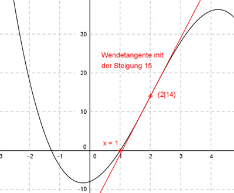

Aufgabe 65 Der Graph einer ganzrationalen Funktion 3. Grades hat im Punkt (2|14) eine Wendetangente mit der Steigung 15 und eine Nullstelle bei x = 1. Wie lautet seine Funktionsgleichung?  Allgemeine Form einer ganzrationalen Funktion 3. Grades: f(x) = ax3 + bx2 + cx + d f’(x) = 3ax2 + 2bx + c f’’(x) = 6ax + 2b 4 Bedingungen: 1. Hat im Punkt (2|14) (dem Wendepunkt) eine Wendetangente mit der Steigung 15 bedeutet erstens: f(2) = 14 --> a * 23 + b * 22 + c * 2 + d = 14 --> 8a + 4b + 2c + d = 14 I 2. Hat im Punkt (2|14) (dem Wendepunkt) eine Wendetangente mit der Steigung 15 bedeutet zweitens: f’’(2) = 0 --> 6a * 2 + 2b = 0 --> 12a + 2b = 0 II 3. Hat im Punkt (2|14) (dem Wendepunkt) eine Wendetangente mit der Steigung 15 bedeutet drittens: f’(2) = 15 --> 3a * 22 + 2b * 2 + c = 15 --> 12a + 4b + c = 15 III 4. Hat eine Nullstelle bei x = 1 bedeutet: f(1) = 0 --> a * 13 + b * 12 + c * 1 + d = 0 --> a + b + c + d = 0 IV I + IV * (-1) 8a + 4b + 2c + d = 14 -a - b - c - d = 0 ---------------------- 7a + 3b + c = 14 V III + V * (-1) 12a + 4b + c = 15 -7a - 3b - c = -14 ------------------- 5a + b = 1 VI II + VI * (-2) 12a + 2b = 0 -10a - 2b = -2 --------------- 2a = -2 |:2 a = -1 a = -1 un VI eingesetzt: 5 * (-1) + b = 1 -5 + b = 1 |+5 b = 6 a = -1 und b = 6 in III eingesetzt. 12 * (-1) + 4 * 6 + c = 15 -12 + 24 + c = 15 12 + c = 15 |-12 c = 3 a = - 1 und b = 6 und c = 3 in I eingesetzt: 8 * (-1) + 4 * 6 + 2 * 3 + d = 14 -8 + 24 + 6 + d = 14 22 + d = 14 |-22 d = -8 Gesuchte Funktionsgleichung: f(x) = -x3 + 6x2 + 3x - 8